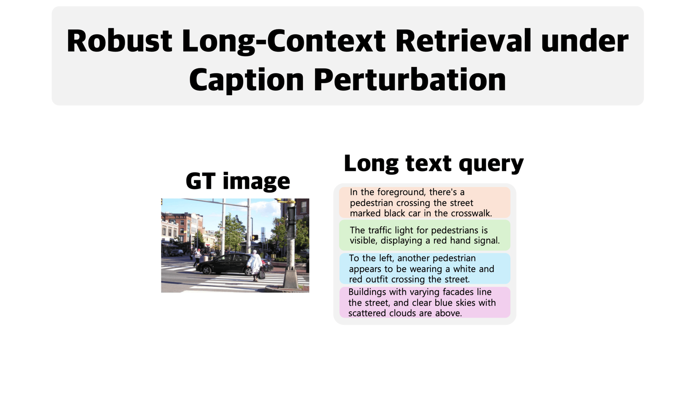
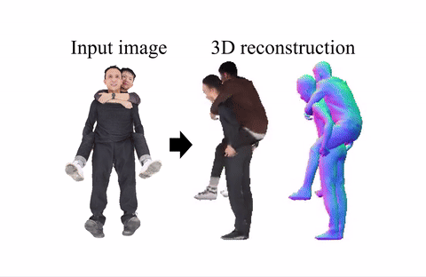
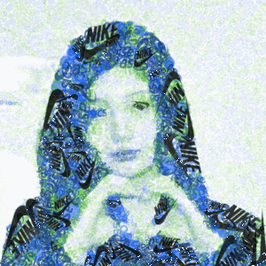
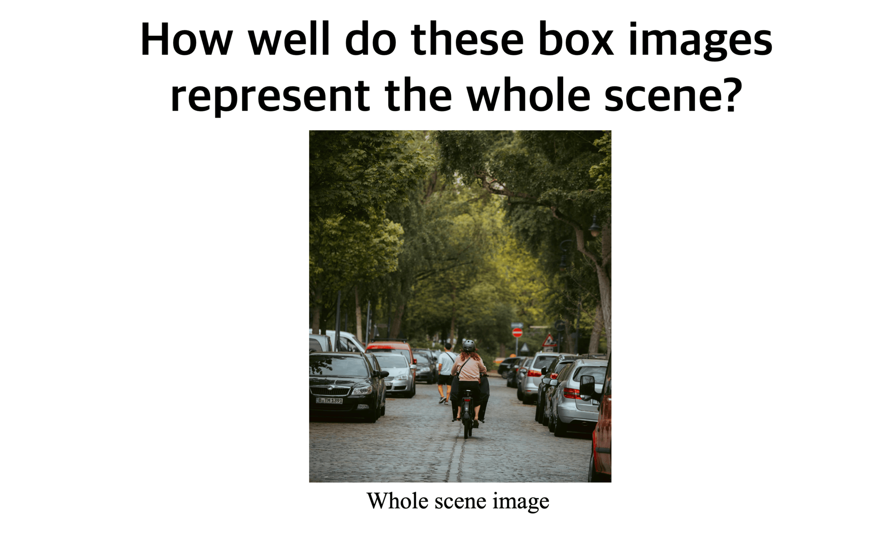
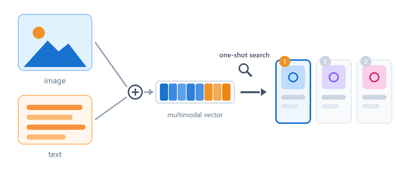

Publications
* denotes equal contribution.
2026

HyFL-CLIP: Hyperbolic Fine-Tuning of CLIP for Robust Long-Context Understanding
European Conference on Computer Vision (ECCV), 2026
A hyperbolic fine-tuning framework that distills the well-established image-text alignment of Euclidean CLIP into hyperbolic space via cross-manifold similarity distillation.

Human Interaction-Aware 3D Reconstruction from a Single Image
Conference on Computer Vision and Pattern Recognition (CVPR), 2026 (Highlight)
A holistic framework for reconstructing physically plausible, high-fidelity textured 3D humans from a single image, explicitly modeling group- and instance-level cues to handle perspective distortion, occlusion, and inter-human interactions.

DiffBMP: Differentiable Rendering with Bitmap Primitives
Conference on Computer Vision and Pattern Recognition (CVPR), 2026
A scalable differentiable renderer for bitmap primitives that optimizes thousands of elements via a highly parallelized custom CUDA pipeline, enabling practical image/video composition, layered export, and artist-friendly creative workflows.

Conference on Computer Vision and Pattern Recognition (CVPR), 2026 (Highlight)
An uncertainty-guided hyperbolic vision-language framework that models part-to-whole semantic representativeness via adaptive uncertainty, improving hierarchical compositional understanding and performance on zero-shot classification, retrieval, and multi-label classification.
2018

One-Shot Item Search with Multimodal Data
arXiv preprint, 2018
A multimodal item retrieval method that jointly searches over image and text features rather than handling them separately, improving similar-item search on large-scale shopping datasets with only minimal additional computational overhead.